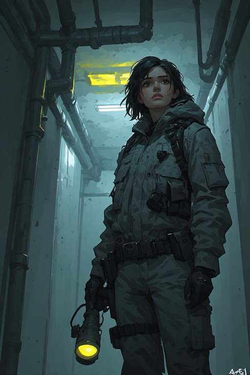
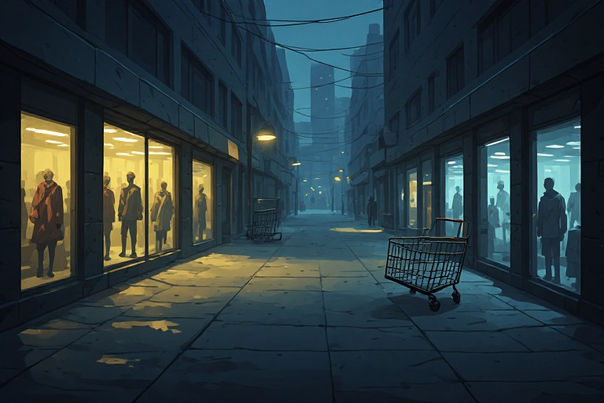
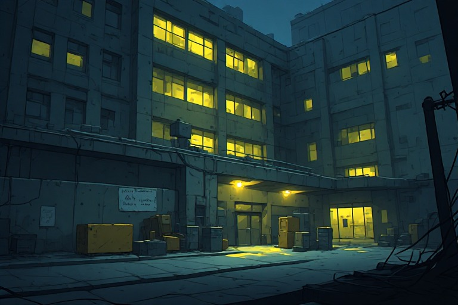
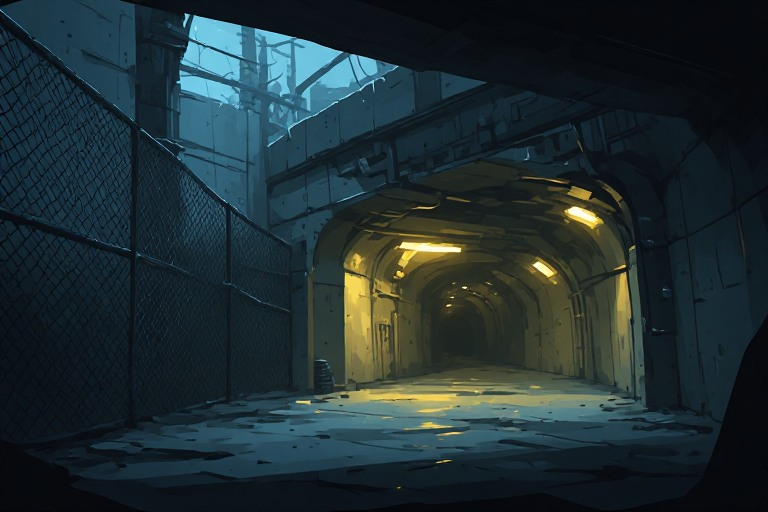
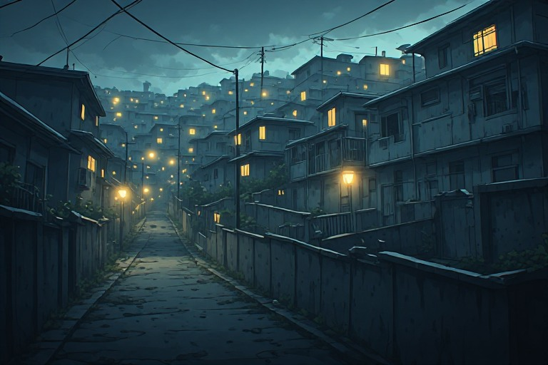
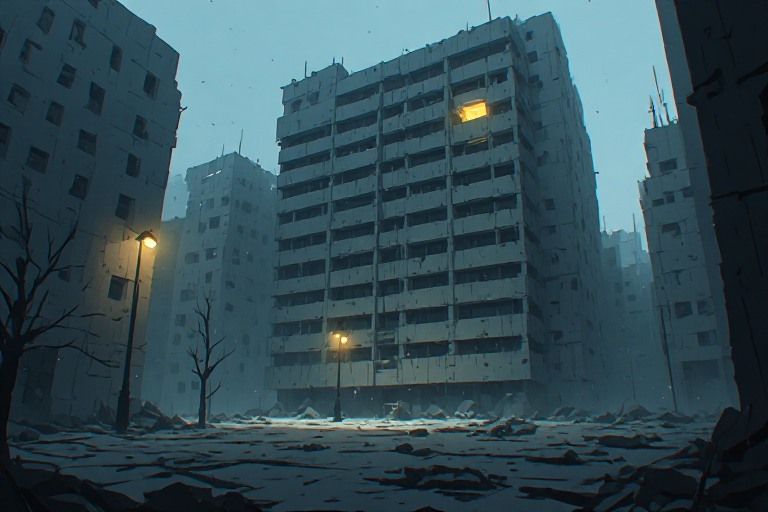
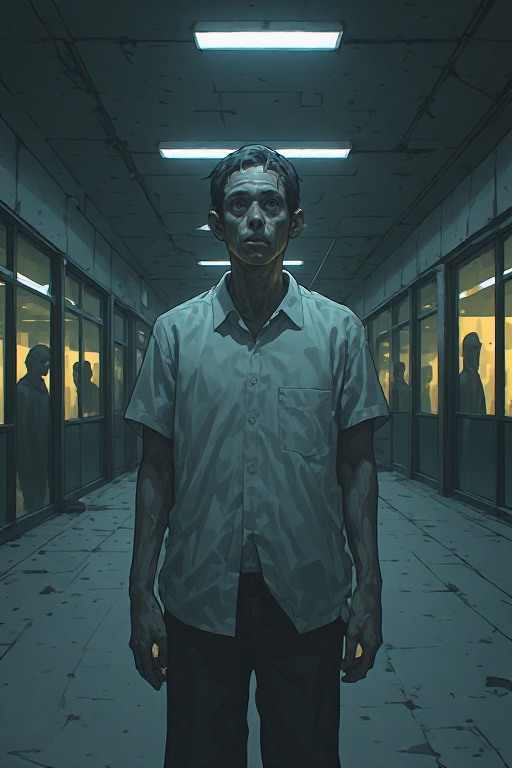
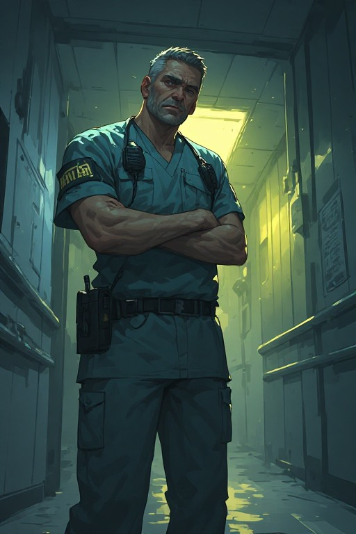
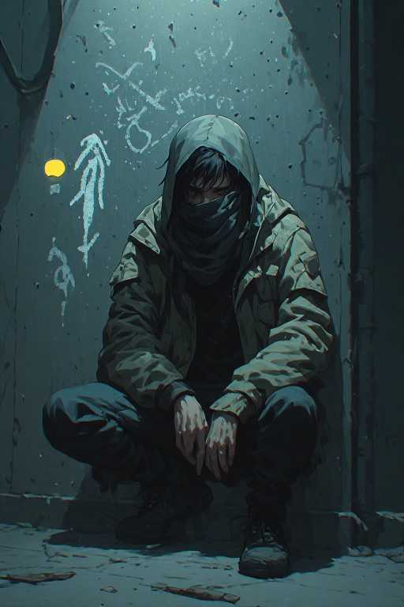
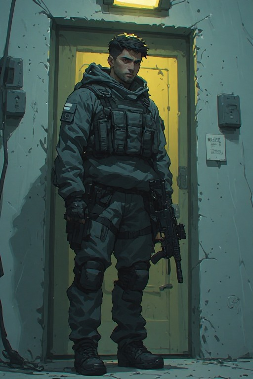

What Happened
Voss City has been sealed. The bridges are gone. Broadcasts stopped. Something moved through the city one night and left behind a silence that isn't quite silence. People started acting differently — then some stopped acting at all. No one knows what it is. No one who got close enough to find out came back able to explain it.
The Hollow does not communicate. It does not negotiate. It is drawn to noise, light, and groups of people. The longer someone remains in the city, the more they begin to resemble it: quiet, still, and wrong. We don't know if that process is reversible. We don't know when it starts. We don't know if it has already started.
There is no cavalry coming. There is no authority left to call. There is only Rena, and the city, and the question of how long she has.

// Player Character — Voss City Maintenance
Rena Kolbe
A former city maintenance worker with no combat training, no special knowledge, and no reason to be the one who survives. She knows the city's infrastructure — tunnels, service corridors, power grids — which is the only edge she has. She is not brave. She is still here.
Voss City — Known Zones

The Stillwater District
The Hollow moved through here first. Lights still on in the shops. People who stayed behind are not quite people anymore. Rich in supplies. Do not linger.

Voss General Hospital
The largest survivor stronghold. Overcrowded, under-resourced, and fracturing under too many desperate people making rules for each other.

The Transit Yards
Maintenance depot and rail yard. Underground service tunnels. One of the few places the Hollow has not fully occupied — the underground confuses it somehow.

Coldwater Heights
Food, water, guns, walls. They have also been alone long enough to develop their own explanations for what the Hollow is. Those explanations have become doctrine.

The Voss Civic Tower
42 storeys. One light on in the upper floors. Someone still transmitting. Nothing confirmed about what's in there has been good.

— the marked — still human-shaped — still occasionally communicative — but wrong —
People Still in the City



Factions & Groups
The Ward
Survivors who built a functional but brutal hierarchy around the hospital. They control access to medicine and use it as leverage. Helpful if you comply. Dangerous if you don't.
The Threadbare
People who refused to join organised groups. They communicate through wall markings — safe routes, danger, supply caches. No leadership. High mortality. The ones still alive know things.
The Heights Assembly
Constructed a belief system around the Hollow — that it is a purge, that they survived because they were meant to, and that letting outsiders in would corrupt their survival. Not all members believe equally.
The Marked
People in late stages of whatever the Hollow does. Still human-shaped. Still occasionally communicative. Other survivors disagree violently on whether they can be helped, ignored, or must be avoided entirely.
Quest Types
Type I
Resource Runs
Retrieve something from a location that has become compromised. The challenge is rarely just getting in — it's deciding how much risk is worth the cost, and whether to come back alone.
Type II
Custody Decisions
Rena encounters someone who is a problem — a Marked individual, a wounded stranger, a child whose presence makes stealth impossible. There is no clean answer. The game does not grade her.
Type III
Faction Errands
Gaining access to a faction's resources requires doing something for them first. What matters is what Rena learns about them while completing it — and whether they are worth staying aligned with.
Type IV
Dead Reckoning
Follow a trail to piece together what happened to a specific place or person. These quests do not promise answers. Sometimes the trail ends with nothing. The truth in Voss City is not redemptive.
Tone & Style
Bleak, grounded, and achingly human. The horror is not primarily the Hollow — it is watching people fail each other under pressure. Violence is unglamorous. Survival is not triumphant. The city feels lived-in and decaying. Ambient sound does more work than jump scares. Nothing is explained cleanly. The player is trusted to sit with uncertainty.
The Hollow is never shown. Never explained. No quest resolves its origin. No ending confirms what it is. The horror is the gap between what is almost normal and what is wrong — and the question of whether Rena is already on the wrong side of that line.
Difficulty
Easy
The Hollow moves slower and is less drawn to minor noise. Resources are slightly more common. Moral choices still have consequences. Death is still possible.
Medium
Resources are scarce. The Hollow is perceptive. Faction trust erodes if Rena takes too long. Most mistakes are recoverable — once.
Hard
Permanent consequences for all major decisions. The Hollow learns Rena's patterns. Supplies degrade. Factions become hostile. No quest guarantees a reward.